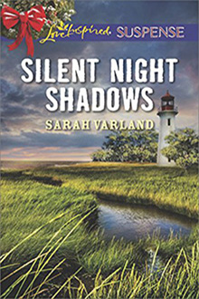

HIJACKED HOLIDAY... When she's snatched off a sidewalk en route to the local Christmas tree lighting, Claire Phillips knows her cozy small town is no longer safe. And when she's saved by a mystery man, she gets another surprise. Her rescuer is none other than Nate Torres—a man from her past that she's tried to forget. He's in town undercover, investigating a drug smuggling ring, and he thinks she's witnessed more than she realizes. Worse, he thinks the ring's leader is a local. Someone she knows and trusts. There's no one for her to rely on but Nate, a man whose action-packed life is worlds away from the security she craves. As the attacks grow more menacing, it will take courage Claire no longer thinks she has to survive to Christmas.